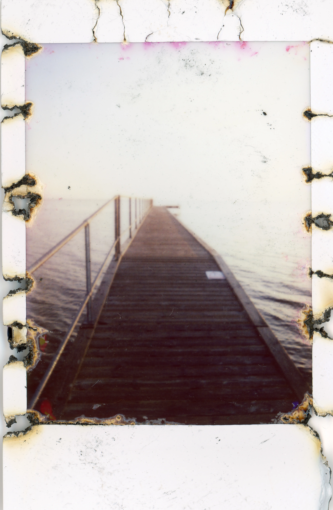
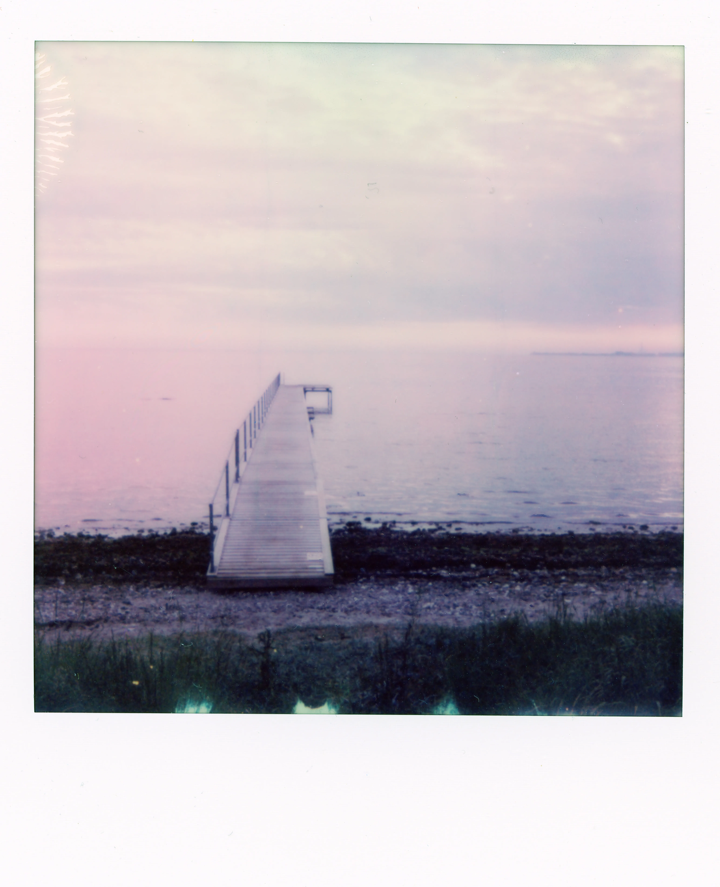

2025
Vinder

Stranden
Stefan Grage
Beskrivelse: Amager Strand ligger tæt på havet. Så jeg ville give dette polaroidkamera et twist af vand: Polaroidkameraet blev lagt i blød i vand i omkring tre uger. Jeg brugte et Polaroid Now+ gen 2.
Nominerede

Nordhavn Om Natten
Stefan Grage
Beskrivelse: Nordhavn, København, om natten. Lang eksponering med udløbet film. Jeg brugte en Polaroid Flip i manuel tilstand med en i-Type film for at lave en lang eksponering.

Karlstrup & Kaffe
Stefan Grage
Beskrivelse: Den smukke natur i en tidligere kalkgrav med et twist af kaffe: Polaroidet blev lagt i blød i kaffe i et par uger. Det gav en flot kulør. Kamera: Polaroid-flip.

Brændte Mandler 2
Stefan Grage
Beskrivelse: Stranden ved mit sommerhus i Løserup. Udløbet instax mini-film. Jeg varmede den i mikrobølgeovnen. Jeg burde have læst lidt om, hvordan man varmer et instant-foto i mikrobølgeovnen: Fotoet brød i brand i ovnen.

Amager Fælled
Stefan Grage
Beskrivelse: Et lille snapshot fra Amager Fælled, en stor skov i den sydvestlige del af København, Danmark. Taget med et Lomomatic Square.
Stranden
Stefan Grage
Beskrivelse: Amager Strand ligger tæt på havet. Så jeg ville give dette polaroidkamera et twist af vand: Polaroidkameraet blev lagt i blød i vand i omkring tre uger. Jeg brugte et Polaroid Now+ gen 2.

Løserup Strand
Stefan Grage
Beskrivelse: For koldt til at tage en dukkert. Så jeg tog et billede i stedet. Polaroidet gav et forfærdeligt magenta farveskær, men jeg endte med at kunne lide det. Taget med et Polaroid Now+ gen 2 og en i-Type-film, som jeg sandsynligvis opbevarede forkert.